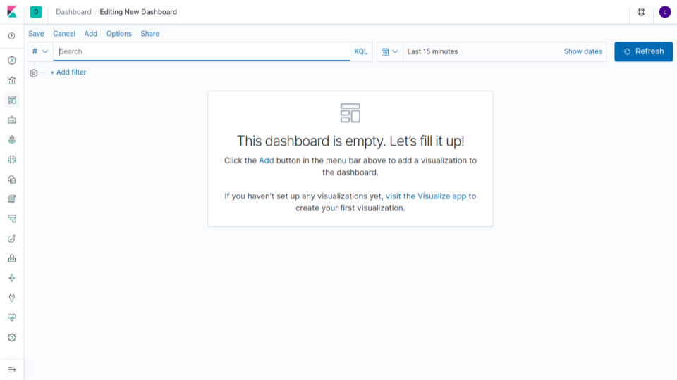
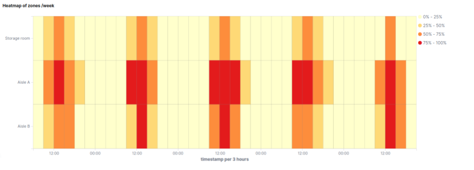
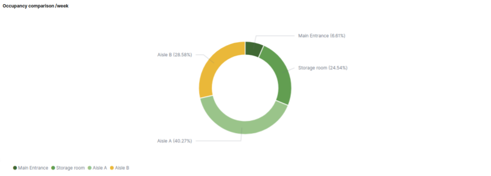
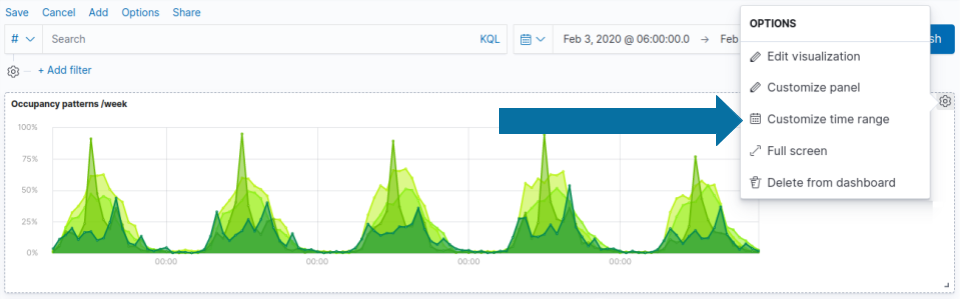
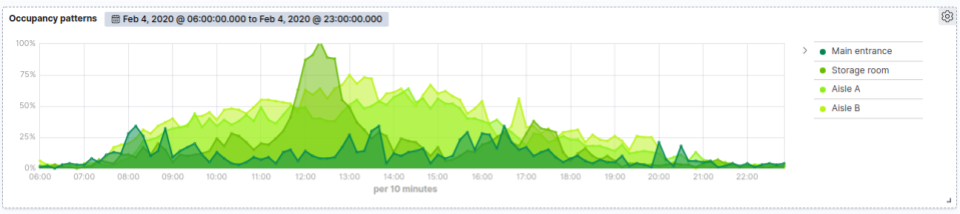

Create an occupancy dashboard in Kibana
Our step-by-step guide to create an occupancy dashboard for physical spaces using Kibana.

The TL;DR (Too Long; Didn't Read)
Learn how to combine visualisations to effectively tell the story of how physical spaces are occupied and used.
- What's the source data?
- Ambient wireless packet traffic (typically Bluetooth Low Energy) from the physical spaces is all that is required.
- What is Kibana?
- Kibana is the visualisation interface to the Elastic Stack, with which our Pareto Anywhere open source software is tightly integrated.
- Can I use something else?
- Yes. Our software integrates well with other databases and analytics tools.
Prerequisites
A source of data and an instance of the Elastic Stack.
-

Set up a hosted Elasticsearch Service
Our step-by-step guide to setup Elastic's hosted cloud service for use with our open source software.
reelyActive infrastructure or standard devices such as a Raspberry Pi can provide a source of data. Our Pareto Anywhere open source software can collect and forward the data to Elasticsearch.
Get Owl-Equipped to have these prerequisites and this dashboard prepared for you.
Creating a new dashboard Step 1 of 3
Create a dashboard in Kibana in a few simple clicks.
- What's a dashboard?
- A Kibana dashboard combines individual visualisations to communicate information to users who don't need to understand the underlying technologies.
- Can there be multiple?
- Yes. It is possible, and often useful, to create multiple dashboards, for instance so that each has a specific purpose and fits within a typical screen.
Open Kibana and then:
- Enter the credentials (username and password)
- Click the dashboard icon from the left toolbar
- Click the create a new dashboard button
You should be able to visualize the default dashboard as below:
The next step is to include visualizations that highlight the space utilization.
Adding the visualisations Step 2 of 3
Create and add individual visualisations to the dashboard in any layout.
- What's a visualisation?
- A Kibana visualisation is a graphical representation of data that can take the form of a chart, table, gauge, map and more.
- How many?
- It is good practice to limit the number of visualisations in any given dashboard to minimise/avoid the need for scrolling and to maintain reasonable load times.
From the dashboard tab, click the Add button and select or create the visualizations.
Add a Time series visualization Part 1
A visual builder visualization that highlights occupancy patterns in order to correctly assess areas needs.
Follow the tutorial below to create a TSVB visualization:
-

Create a TSVB in Kibana to understand space utilization
Our step-by-step guide to create a TSVB visualization in Kibana to observe how spaces are used over a week.
Add a Heatmap of zones visualization Part 2
A heatmap of zones that visualizes all busy areas within the space.
Follow the tutorial below to create a heatmap of zones:
-

Create a TSVB in Kibana to understand space utilization
Our step-by-step guide to create a heatmap to visualise the occupancy of a physical space over time.
Add a Pie Chart Part 4
A pie chart visualization that compares zone performance.
Follow the tutorial below to create a pie chart:
-

Create a pie chart in Kibana to compare zone activity
Our step-by-step guide to create a pie chart visualization in Kibana.
Add a Time series bar visualization Part 5
A visual builder visualization that measures rooms occupancy.

Follow the tutorial below to create a TSVB bar visualization:
-

Create a TSVB in Kibana to observe room occupancy over time
Our step-by-step guide to create a TSVB visualization in Kibana to answer the question: When are rooms occupied?
Save the dashboard. You should be able to view the dashboard composed of the added visualizations as below:
Customisation Step 3 of 3
Customise the dashboard with filters for time periods, proximity and more.
- What's a filter?
- A Kibana filter is a means to limit data to a specific selection or criteria, either by a search query or simply by clicking on the elements within a visualisation.
- What to filter?
- It is good practice to apply filters which reinforce the purpose of the dashboard: the simplest example being the time range (daily, weekly, monthly, etc.).
From the dashboard tab, click the + Add filter from the top toolbar and then:
Custom time filter Part 1
In Kibana it is possible to define a period of time specific to each visualization.
- From the visualization selected, click the gear icon
- Click Customize time range button
- Edit the time to adjust the visualization
You should be able to choose a specific time range for each visualization that makes up the dashboard.
Custom RSSI filter Part 2
RSSI is used to approximate distance between the device and the sensor. By applying a RSSI filter you can adjust the dashboard and display only tags within a certain distance.
- Click the + Add filter button
- Select rssi Field
- Choose the operator is between
- Define the time range and Save the filter

Winner of a 2020 Elastic Search Award!
For our innovation of making physical spaces searchable like the web.
Where to next?
Learn more about Kibana integration, or continue exploring our open architecture and all its applications.
-

reelyActive Kibana integration overview
Find links to all our Kibana tutorials. -

Occupancy Analytics Use Case
Learn more about this use case of Pareto Anywhere by reelyActive. -

Create an asset tracking dashboard in Kibana
Our step-by-step guide to create an asset tracking dashboard for physical spaces using Kibana. -

diyActive Home
The home for reelyActive developers.